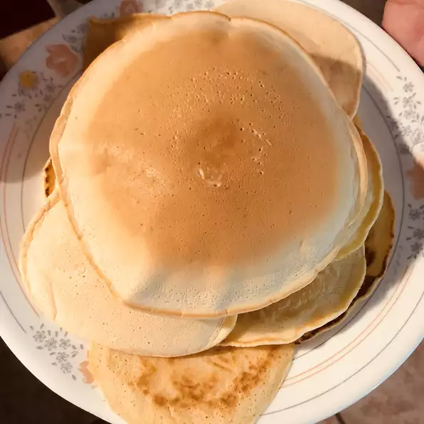

Pancakes

Description
A quick and easy pancake recipe.
Ingredients
- 2 large eggs
- 2 teaspoons sugar
- 280 grams plain flour
- 2 teaspoons baking powder
- 450 ml milk
Steps
- Beat eggs until fluffy; beat in sugar. In a separate bowl, stir flour and baking powder together. Stir milk and flour mixture alternately into eggs, starting and ending with milk.
- Heat a lightly oiled griddle or frying pan over medium high heat. Pour or scoop the batter onto the griddle, using approximately 60 grams for each pancake. Do not turn pancake until tiny holes appear all over the uncooked side (top) of the pancake in the pan. Brown on both sides and serve hot.